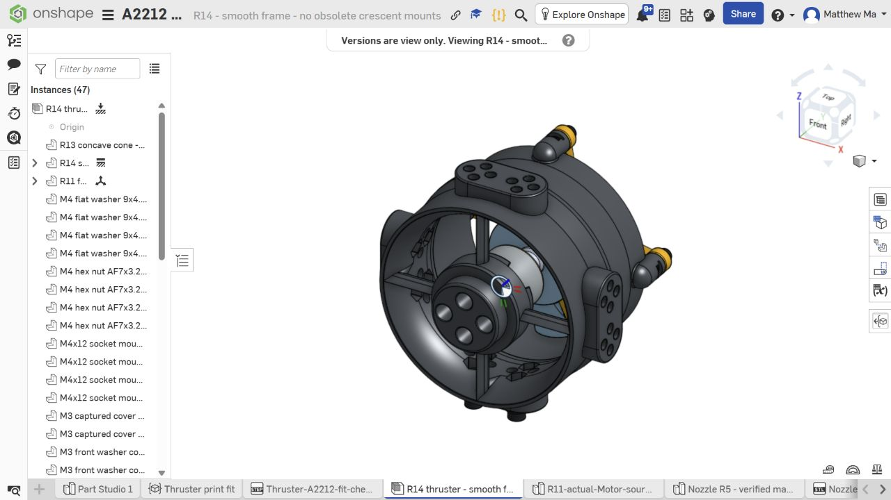
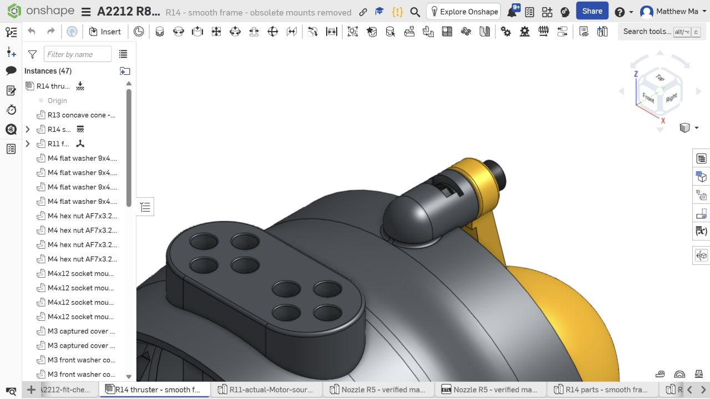

UNDERWATER ROBOTICS / IN DEVELOPMENT
Built to
explore.
Designed
to learn.
We’re the Webb Submarine ROV club. We’re developing an underwater robot—and learning how to turn an idea into something that works.
Explore the project
01 / THE PROJECT
An underwater robot.
A hands-on education.
A remotely operated vehicle brings mechanical design, electronics and programming into one shared problem.
A motor needs a secure mount. A propeller needs room to turn. Every part needs to work with the parts around it. We’re developing those connections through CAD, fabrication planning and testing.
Our vehicle layout has eight thruster positions. Recent work focuses on the thruster assembly, including a smoother housing, accessible hardware and small pieces for checking printed fit.

THE CURRENT DESIGN
Small changes.
Better assemblies.
The latest housing removes obsolete mounts and smooths the outside of the thruster while retaining its working joints. The R13 cone and R11 fan carry forward into this configuration.
Read the assembly guideWhere we are todayCAD and fabrication development. Physical fit, retention, thrust and underwater operation still need testing. The earlier whole-vehicle model is a separate snapshot.
02 / FROM THE WORKSHOP
The work behind
the robot.
Design decisions, revisions and the ideas
that give the project a direction.
How the motor
and fan evolved.
Follow the changes in motor fit, retention, housing design and assembly access—from the PLA baseline through R14.
Why we’re building.
Who it could help.
What the club does, what we’re learning, and our vision for sharing the project with the museum and its community.
03 / OUR MUSEUM VISION
Engineering with
a purpose beyond
the workshop.
We hope to turn what we learn into useful science and engineering experiences for the museum and its community.
Share the process.
A future display or activity could use CAD images, printed parts and real design decisions to make engineering easier to understand.
Explore what’s possible.
As the vehicle develops, we hope to explore museum-directed underwater viewing or documentation. Any activity would depend on the museum’s needs and demonstrated vehicle capability.
04 / THE DESIGN ARCHIVE
Open the files.
Follow the thinking.
Start with the current design, or explore
the records behind earlier revisions.
Use the instructions for the revision you choose. Earlier hardware stacks and print files are not automatically interchangeable.